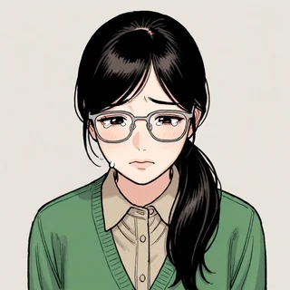
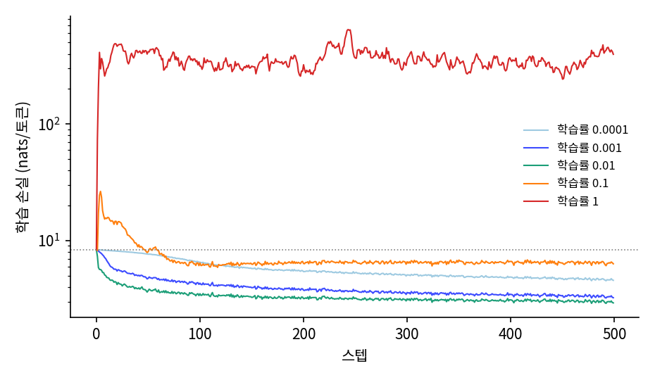
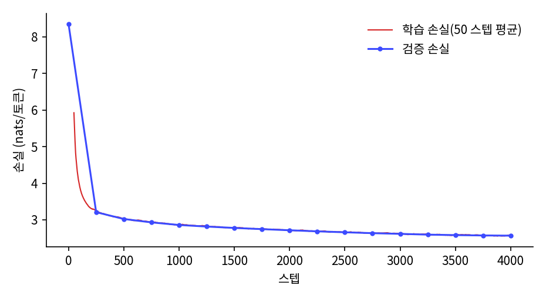

앞 글자 여럿 보기: 비슷한 낱말을 비슷하게 다루는 신경망
학습 루프와 학습률: 손실이 417.8 로 튄 날
모델의 파라미터 256만 개는 지금 무작위 수이고, 학습 전 손실 8.3552 는 아무것도 모르는 모델의 값이다. 손실이 줄어드는 방향으로 파라미터를 고쳐야 하는데, 한 번에 얼마나 고쳐야 할까?
학습 루프 한 바퀴
1부의 모든 모델은 같은 학습 루프 하나(sources/common/train.py)로 학습하고, 한 스텝은 늘 네 가지로 이루어진다. 학습 토큰에서 256 토큰짜리 조각 64 개를 아무 데서나 뽑고(한 스텝에 16,384 토큰), 손실을 계산하고, 역전파로 그래디언트를 구하고, 옵티마이저가 파라미터를 고친다.
# sources/common/train.py 의 train 에서 발췌
for step in range(max_steps):
cur_lr = lr_at(step, max_steps, lr, warmup, min_lr_frac) # 이 스텝의 학습률
for g in opt.param_groups:
g["lr"] = cur_lr
x, y = get_batch(train_tokens, batch_size, block_size, gen, device) # 조각 64 개, y 는 한 칸 뒤
_, loss = fwd(x, y) # 다음 토큰 교차 엔트로피
opt.zero_grad(set_to_none=True)
loss.backward() # 역전파로 그래디언트
gnorm = torch.nn.utils.clip_grad_norm_(model.parameters(), grad_clip if grad_clip else float("inf"))
opt.step() # 파라미터 고치기
loss.backward() 한 줄이 파라미터 256만 개의 그래디언트를 모두 채우는데, 선생님은 그 줄을 짚으며 지난 학기 수업을 꺼냈다.
옵티마이저는 AdamW 를 쓴다. AdamW 는 그래디언트 반대쪽으로 옮기는 경사 하강의 변형인데, 파라미터마다 그래디언트의 평소 크기로 나눠 스텝을 고르게 맞춘다. 그래서 학습을 시작한 무렵에는 학습률이 곧 파라미터 하나가 한 스텝에 움직이는 대략의 크기가 된다. 학습률은 그래서 모델에 맞게 골라야 하는 숫자다.
학습률 다섯 가지
학습률을 고르려고, 같은 모델을 같은 씨앗과 같은 배치 순서로 두고 학습률만 0.0001, 0.001, 0.01, 0.1, 1 로 바꿔 500 스텝씩 돌리기로 했다. 서연이 학습률 칸을 맡았다.

작은 것부터 할까? 아니, 다섯 개 다 걸어 놓고 결과 보자. 1 부터.

1? 너무 크지 않아?

어디서 터지는지 봐야 범위를 알지.
학습률 1 의 로그가 먼저 올라왔다.
--- 학습률 1
eval step 0 | tokens 0 | val_loss 8.3589 | val_bpb 3.0337 | 0s
step 0 | loss 8.3603 | lr 1.00e+00 | grad_norm 0.376 | 59,349 tok/s
step 50 | loss 417.8321 | lr 1.00e+00 | grad_norm 21.260 | 1,502,981 tok/s
step 100 | loss 313.8629 | lr 1.00e+00 | grad_norm 19.490 | 1,927,869 tok/s
step 150 | loss 313.9348 | lr 1.00e+00 | grad_norm 21.172 | 2,161,947 tok/s
…
step 450 | loss 242.6680 | lr 1.00e+00 | grad_norm 11.482 | 2,619,990 tok/s
eval step 500 | tokens 8,192,000 | val_loss 419.5650 | val_bpb 152.8560 | 3s
학습률 1: 첫 손실 8.360, 가장 큰 손실 646.957 (스텝 243), 마지막 손실 396.825, 검증 바이트당 비트 152.8560
(전체 로그는 sources/remeasure/rerun_train_mlp.out 3절.)

417.8! 스텝 0 에서 8.36 이었는데 50 스텝 만에 50 배야.

…아무것도 모를 때가 8.36 인데, 그보다 50 배 나쁘다고?
손실 8.36 은 4,096 개 토큰에 고르게 확률을 줄 때의 값이다. 손실 417.8 은 정답 토큰에 e⁻⁴¹⁷ 쯤의 확률을 준다는 뜻이니, 모델은 아무렇게나 고르는 것보다 훨씬 나쁘게, 정답이 아닌 토큰 몇 개에 확률을 거의 다 몰아 두고 있다. 손실은 끝까지 수백에 머물렀고 NaN(계산할 수 없는 값)은 나오지 않았다. 그 모델에게 「Once upon a time」을 주고 이어 쓰게 하면 이렇게 쓴다(sources/mlp-lm/probe_mlp.out).
[학습 전] Once upon a time glove work bed keep slide pointed rug ob cleaning asked flymxibleersSorry melial chee toucher; ambulance fanoy” attach\n thirsty holds ticket nosy yelled draininted cloudma fragile0 “ hop
[학습률 1, 스텝 51, 씨앗 1] Once upon a time wings thankful wings wings wings thankful forgetLater surLaterLaterroom sur wings thankful forgetuggLaterLaterose pleaseLaterLateruggLaterLateruggLaterLaterLaterLaterLaterLaterLaterLaterLaterLaterLaterLaterLater
학습 전 모델은 토큰을 아무렇게나 늘어놓지만, 학습률 1 로 51 스텝을 고친 모델은 「 wings」「 thankful」「Later」 몇 개만 되풀이한다. 민준은 화면을 보다가 웃음을 터뜨렸다.

「LaterLaterLaterLater」. 이거 어디서 봤는데.
그 강의를 듣던 주에 민준은 「별빛 정거장」 개발 블로그에서, 시험판 루나가 고치는 폭을 너무 크게 잡은 날 하룻밤 사이에 「마스터마스터마스터」만 하게 됐다는 이야기를 읽은 적이 있었다.

루나도 이랬대. 고치는 폭이 너무 커서 「마스터마스터마스터」만 했다고. 우리 루나는 「Later」만 하네.

미안. 내가 1 부터 걸자고 해서.
왜 미안해. 이걸로 1 은 안 된다는 걸 알았잖아. 안 되는 걸 알아낸 것도 결과야.
서연은 그 말투를 기억하고 있었다. 1학년 때 민준이 처음으로 자기 풀이를 크게 칭찬해 주던 날과 같은 말투였지만, 민준은 그런 줄도 모르고 다음 줄의 로그를 읽고 있었다.
왜 1 은 터졌을까? 학습 전 파라미터를 재 보면 은닉층 가중치의 절댓값 평균이 0.0255, 출력층 가중치가 0.0221 이다. AdamW 는 처음 몇 스텝에 파라미터마다 학습률만큼씩 움직이니, 학습률 1 은 크기가 0.02 정도의 가중치를 한 스텝에 1 씩, 원래 크기의 마흔 배 넘게 옮긴다. 51 스텝 뒤에 재 보니 출력층 가중치의 절댓값 평균은 2.1615 로 백 배 가까이 커져 있었다(sources/mlp-lm/probe_mlp.out). 출력층 가중치가 이렇게 크면 로짓 몇 개가 다른 로짓보다 수십씩 커지고, 소프트맥스는 그 몇 토큰에 확률을 거의 다 준다. 정답이 그 몇 토큰이 아니면 손실은 로짓의 차이만큼 수백이 된다.
다섯 학습률의 결과를 나란히 놓으면 다음과 같다.
| 학습률 | 첫 손실 | 가장 큰 손실 (스텝) | 마지막 손실 | 검증 바이트당 비트 |
|---|---|---|---|---|
| 0.0001 | 8.360 | 8.360 (0) | 4.564 | 1.6849 |
| 0.001 | 8.360 | 8.360 (0) | 3.237 | 1.2073 |
| 0.01 | 8.360 | 8.360 (0) | 2.922 | 1.0940 |
| 0.1 | 8.360 | 26.447 (4) | 6.323 | 2.3768 |
| 1 | 8.360 | 646.957 (243) | 396.825 | 152.8560 |

학습률을 0.0001 에서 0.01 까지 열 배씩 키우면 500 스텝 뒤의 손실이 4.564, 3.237, 2.922 로 계속 낮아지고, 한 칸 더 간 0.1 에서 무너진다. 가장 좋은 학습률이 무너지는 학습률 바로 옆에 있다는 벼랑의 모양이 언어 모델에서도 그대로 나타났다. 0.1 의 실패는 1 과 모양이 다르다. 스텝 4 에 손실이 26.447 로 튀었다가 6 근처로 내려와 멈췄는데, 손실 6 은 ln 4096 = 8.32 보다만 조금 낮다. 터지지는 않았지만 거의 배우지도 못한 두 번째 실패다.
본 학습 4,000 스텝
500 스텝 뒤 손실이 가장 낮았던 0.01 로 본 학습을 했다. 처음 100 스텝 동안 학습률을 0 에서 0.01 까지 올리고(워밍업), 그 뒤로는 코사인 곡선으로 0.001 까지 내린다. 그래디언트 벡터의 길이가 1.0 을 넘으면 길이를 1.0 으로 줄이는 그래디언트 클리핑도 켰다. 스텝 4,000 번이면 6,553만 토큰을 본다.
## 4. 본 학습: 학습률 0.01 (100 스텝 예열 후 코사인으로 10% 까지), 4,000 스텝, 그래디언트 자르기 1.0
eval step 0 | tokens 0 | val_loss 8.3589 | val_bpb 3.0337 | 0s
eval step 250 | tokens 4,096,000 | val_loss 3.2090 | val_bpb 1.1660 | 2s
eval step 1000 | tokens 16,384,000 | val_loss 2.8585 | val_bpb 1.0396 | 7s
eval step 2000 | tokens 32,768,000 | val_loss 2.7143 | val_bpb 0.9871 | 13s
eval step 3000 | tokens 49,152,000 | val_loss 2.6157 | val_bpb 0.9508 | 20s
eval step 4000 | tokens 65,536,000 | val_loss 2.5669 | val_bpb 0.9332 | 26s
검증 글 전체: 손실 2.5663, 바이트당 비트 0.9326 (토큰 바이그램 α=0.01: 1.2818), 학습 27초
(학습 중의 값은 검증 글 앞 200만 토큰으로, 마지막 줄은 검증 글 전체로 쟀다.)

RTX 4090 한 장에서 학습은 27초 걸렸고, 검증 글 전체의 바이트당 비트는 0.9326 이다. 같은 토크나이저로 학습 토큰 1억 개를 세어 만든 토큰 바이그램이 1.2818 이었으니, 앞 토큰 여섯 개를 보는 신경망은 바이그램보다 바이트 하나에 0.35 비트를 덜 쓴다. 바이트 하나를 토큰으로 본 7-그램이 1.2817 이었던 것과 비교해도 크게 낮다.
모델이 쓴 글도 달라졌다. 같은 시작 문장(프롬프트) 「Once upon a time」을 주고, 모델이 내놓은 확률표 그대로 다음 토큰을 뽑아 80 토큰을 이어 쓰게 했다.
[1] Once upon a time, there was a little bunny named Spot. Spot was a brave dog, and hes back. It was big and round and had a red petals. He loved to play with it in the park. One day she wanted her new doll would always help the bunny to search.\nOn her way, she sees a big seesaw. It is not wind. Fire's friends would play
[3] Once upon a time, there was a red puppy. The wore the hat very warm coat. Amy was scared and wanted to find its family. The wild bird flew together through the stream together.
(sources/mlp-lm/probe_mlp.out, 씨앗 1·3. 씨앗 3 은 이야기 경계 토큰을 뽑아 일찍 끝났다.)
시작 문장에 루나의 이름을 넣어도 마찬가지였다.
[1] Once upon a time, there was a girl named Luna.\n"Hi, kid, I like that one. Let's play together," said the fish.\nThe animals were sad and did not need to clean upstairs."\nJimmy smiled and nodded. He could not wait to get his again. He thanked the bunny and searching for them.
(같은 파일, 시작 문장 「Once upon a time, there was a girl named Luna.」, 60 토큰.)
문장 하나하나는 동화처럼 시작하고 끝난다. 그러나 토끼 「Spot」이 한 문장 뒤에 「brave dog」이 되고, 「He」가 「she」로 바뀐다. 모델은 앞 여섯 토큰만 보므로, 일곱 토큰 전에 나온 토끼는 이미 보이지 않는다.
ML에서: 학습률은 작은 실험으로 먼저 고른다
큰 언어 모델을 학습하는 팀들도 학습률을 처음부터 큰 실험으로 고르지 않는다. 작은 모델이나 짧은 학습으로 학습률 몇 가지를 먼저 훑고, 터지는 곳 바로 아래에서 고른 뒤 워밍업과 감쇠를 붙인다. 워밍업은 학습 초반에 아직 엉망인 파라미터와 그래디언트의 평소 크기를 AdamW 가 추정하는 동안 스텝을 작게 두는 장치이고, 감쇠는 끝으로 갈수록 스텝을 줄여 손실을 더 낮추는 장치다. 이 장의 본 학습이 쓴 「100 스텝 워밍업 + 코사인 감쇠」는 1부의 모든 모델이 같이 쓴다.
문제 4. 터지지 않았는데 배우지도 못했다
학습률 0.1 로 500 스텝 학습하자 스텝 4 에 손실이 26.447 로 튀었다가 6 근처로 내려와 머물렀고, 검증 바이트당 비트는 2.3768 이었다. 같은 토큰 4,096 종류에 고른 확률을 주면 바이트당 비트가 3.0181 이고(ln 4096 을 토큰 하나 3.976 바이트로 바꾼 값), 토큰 바이그램은 1.2818 이다. 학습률 0.1 의 모델은 무엇을 배웠고 무엇을 못 배웠을까?
고른 분포 3.0181 보다는 낫고 바이그램 1.2818 보다는 한참 나빠요. 학습 전 검증 값이 3.0337 이었으니까 조금은 배웠어요.

바이그램보다 나쁘면 바로 앞 토큰도 제대로 못 쓴다는 거네요. 손실이 터지지는 않았는데 배우지도 못한 거고요.

그래요. 「터지지 않음」과 「배움」은 달라요. 학습률을 고를 때는 손실이 줄었는지뿐 아니라 어디까지 줄었는지를 봐요.
문제 5. 학습 전 손실이 ln 4096 보다 조금 큰 이유
학습 전 손실은 8.3552 였고, ln 4096 = 8.3178 이다. (가) 학습 전 손실이 ln 4096 근처인 것을 확인하는 일은 왜 쓸모 있는가? (나) 왜 ln 4096 보다 조금 클까? 그 반대(ln 4096 보다 작은 학습 전 손실)는 가능한가?
(가)는 모델이 처음에 4,096 개에 거의 고르게 확률을 준다는 확인이에요. 손실이 처음부터 20 이었다면 초기화가 잘못돼서 어떤 토큰에 확률이 쏠린 거겠죠.
(나)는 로짓이 정확히 0 은 아니니까요. 작은 무작위 값이 있어서 확률이 조금씩 고르지 않아요.

확률이 고르지 않으면 손실이 왜 커질까요? 어떤 토큰은 1/4,096 보다 많이 받는데요.

많이 받는 토큰이 정답이면 손실이 줄고, 적게 받는 토큰이 정답이면 늘어요. 그럼 평균은… 무작위니까 늘고 줄고가 비겨야 할 것 같은데.
−log 는 어떤 모양의 함수였죠?

아래로 볼록해요. 확률이 조금 줄 때 늘어나는 손실이, 같은 만큼 늘 때 줄어드는 손실보다 커요. 그래서 무작위로 흔들리면 평균은 ln 4096 보다 커지네요.
그럼 학습 전 손실이 ln 4096 보다 작으려면 정답 토큰 쪽으로 우연히 기울어 있어야 하는 거네요. 학습 전 모델이 흔한 토큰을 미리 알 리는 없으니까, 작게 나오면 뭔가 잘못 잰 거고요.
문제 6. 덜 보고도 더 잘 맞힌다
토큰 바이그램은 학습 토큰 1억 개를 세어 만들었고 바이트당 비트가 1.2818 이다. MLP 언어 모델은 본 학습 4,000 스텝에 6,553만 토큰만 보고 0.9326 이 되었다. 적은 토큰을 보고도 더 잘 맞힌 것은 무엇 때문인가?
일단 앞을 여섯 토큰 보니까요. 바이그램은 바로 앞 하나만 보고요.
그렇다면 같은 1억 개로 앞 다섯 토큰의 6-그램 표를 세면 MLP 보다 잘 맞힐까요?

그건 아닐 것 같아요. 바이트 단위로도 학습 글이 적으면 긴 n-그램이 오히려 나빠졌잖아요. 토큰 6-그램은 문맥 종류가 10¹⁸ 개가 넘으니까 1억 개로는 거의 다 빈칸이에요.
그럼 앞을 많이 보는 것만으로는 안 되고, 본 적 없는 문맥을 본 문맥에 비유하는 힘이 있어야 하는 거네요. 그게 임베딩이고요.
그래요. MLP 는 6,553만 토큰을 보면서 문맥 하나하나를 외우는 대신, 모든 문맥이 함께 쓰는 임베딩과 가중치를 고쳤어요. 그래서 처음 보는 문맥도 비슷한 문맥에 비유하 맞힐 수 있어요.